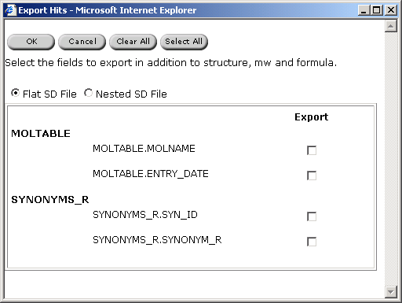

| ChemOffice Enterprise
|
User's Guide
|
Exporting Search Results
It is possible to save a hitlist
as a SD or RD file. The structure, molecular weight, and formulae are automatically exported.
Any other fields in the search
form used to produce the hit list can be included in the
export.
To export results:
- After compiling a hitlist, click
Export Hits.
The Export Hits dialog box appears.

- Select the additional fields by selecting the checkbox
to the right of the appropriate field name.
- Select a type of SD file:
- flat - in the event of multiple results for one
field: a record is created for each result
- nested - multiple results for one field all appear in one cell.
- Click
 OK.
OK.
- Click the Click to Download hyperlink.
The Save As dialog box appears, containing a numerical name
for the file, based on the date and time.
- Select a download location and click
Save.
The file exported flattens each record so that a compound with
subform fields (like multiple batches in the Registration System) is found in one record in the
exported file. All subform data is concatenated with -- between fields, the
first line being the field names.